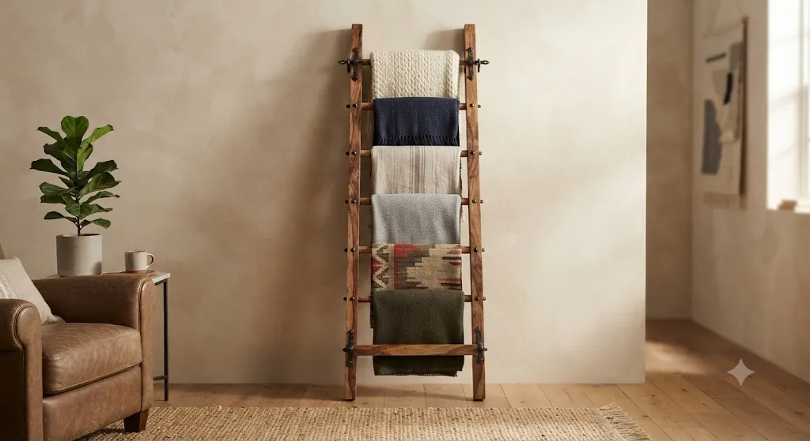

Freestanding Quilt / Blanket Ladder (6-Rung)
Masterfully crafted in Jodhpur for high-volume international export, the Freestanding Quilt / Blanket Ladder (6-Rung) reflects Living Room Cozy sensibilities engineered for retail success at Pottery Barn, Kirkland’s. Features 6-foot tall rustic solid hardwood ladder with wrought iron cross-rod joinery. Constructed exclusively from certified sustainable timber kiln-dried to strict 8–10% moisture equilibrium to prevent warping across diverse North American and European climates. Accompanied by electrostatically coated, corrosion-resistant ironwork with seamless hand-welded joins. Every piece is individually wrapped, buffered with high-density EPS edge guards, and boxed in an ISTA-1A drop-tested 5-ply export master carton (unit volume: 0.045 CBM). Fully compliant with the US Lacey Act, VRIKSH timber legality verification, and EUDR deforestation due diligence regulations.
| Material & construction | 6-foot tall rustic solid hardwood ladder with wrought iron cross-rod joinery |
|---|---|
| Dimensions | 20" x 3" x 72" / 51 x 8 x 183 cm |
| Carton volume | 0.045 CBM / unit |
| Minimum order | 25 Pcs |
| Lead time | 45–60 Days (FOB Mundra) |
| Western retail benchmark | $110 – $150 |
| Style | Living Room Cozy |
| Indicative HS heading | 9403.60 — Other wooden furniture |
| Typical buyers | Pottery Barn, Kirkland’s |
Indicative HS heading only — your customs broker confirms final classification. Kiln-dried 8–10% moisture, ISPM-15 dunnage, VRIKSH / Lacey / EUDR paperwork on request.